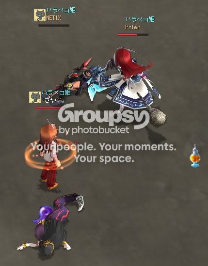
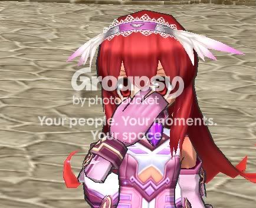

เชื่อว่าหลายๆคนใน Palringo ไม่ได้ออนตลอด 24 ชั่วโมงและไม่ได้เล่นเป็นตี้ด้วยกันตลอดเวลา อาจจะพลาดโอกาส ช่วงเวลาเฮฮา ภาพหลุด ภาพฉาวโฉด ภาพติดเรท+(ไม่อนุมัติในบอร์ด) ไปมาก จึงได้จัดตั้งกระทู้สุดแสบ อ๊ะ... อัลบั้มภาพมาสาธยายให้กับคนที่พลาดโอกาสนั้นทุกคน โดยภาพส่วนมากโคนั้นได้ทำการสูบจาก Palringo มาจากคนอื่นๆ และเจ้าของภาพด้วย
หึๆ... （￣ー￣）
สารบัญภาพ
บทที่ I. การตายของทุกๆคน
ช่วงแรกๆคงโพสหน้าแรกไปก่อน หลังๆคงค่อยย้ายไปหน้าหลังๆ ฮา~

ยินดีต้อนรับ ภาพทุกคนที่โพส ถ้าเข้าตาหลายๆคน (โดยเฉพาะโค เคะๆ (≧∇≦)/) จะถูกจัดเก็บเข้าแฟ้มต่อไป

Note - Comment เล็กน้อย
เร็วๆนี้อาจมีการจัด Event ประกวดภาพรายเดือน และมีการมอบรางวัลให้กับผู้ชนะการประกวด
(ของรางวัลสามารถมอบให้กับผู้เล่นในเซิฟเวอร์ญี่ปุ่นเท่านั้น)
รูปประจำวันนี้ Nov-01-2011
เริ่มเลยรายแรก PAGE หรือนามว่าปาเก้คุง
เจ้าตัวอยากเปลี่ยนซอขนาดหนัก เดินหา Crystal ตามโกเล็มก็เจอแต่ราคาแพงๆ เลยออกไปวัดดวงตบตีกับเจ้ายักษ์ Cyclop
 จนกระทั่งบังเอิ๊นบังเอิญ ดรอปมาจนได้ แต่ทว่า...
จนกระทั่งบังเอิ๊นบังเอิญ ดรอปมาจนได้ แต่ทว่า...
งานนี้ท่าทางเจ้าตัวคงต้องไปเคลียร์กับเจ้าขนนกหน้าเมืองเหนือเป็นการส่วนตัวแล้วหล่ะ (*^▽^*)
ประกาศโฆษณา Nov-03-2011(ปาเกะ Shop เปิดรับขายกิฟ 1000 Shop Point ในราคา 5m สำหรับคนที่มีปัญหาเติมเงินเซิฟยุ่นไม่ได้ ตอนนี้มีเหลือ 16k ใครอยากซื้อรีบๆไปใช้บริการดูนะนิ -.+)
 โค : รูปขวามือนี่คือคนดูแลกิจการปาเกะ Shop (>_<)>
โค : รูปขวามือนี่คือคนดูแลกิจการปาเกะ Shop (>_<)> 
****************************************************------------------------------------****************************************************
****************************************************------------------------------------****************************************************
ต่อมารายที่สอง NETIX หรือนามว่า กฤษคุง

เหตุเกิดที่ดันมิติใต้ชั้น 2 เจ้าตัวเล่นอาชีพเด็ม ไปเก็บเลเวลแชร์ปาตี้กันกับโค และคุณดลกันสามคน
กฤษคุงมีความมั่นใจสูงว่าระบบ Stealth Mode ที่ติดตั้งนั้นสมบูรณ์แบบชนิดที่เรียกว่า "มอนตามหาไม่เจอ"
แต่จนแล้วจนรอด...

ก็ต้องมาสยบกับให้กับแม่งูสาวที่ชอบฉกตับคนกินแถวๆนั้นๆ แถมลงเวทย์พื้นหมู่ ชนิดที่เรียกว่าถ้าไม่วิ่งหนีอยู่ ยังไงก็หลบไม่พ้น


Prier : แหม- นี่ขนาดฉันวิ่งล่อเป้ายังล้มไปกองนอนกับพื้นน้อยกว่าเลยนะนั่น
 -さや- ： ก็นะ- เคะๆ
-さや- ： ก็นะ- เคะๆโค : งานนี้กฤษคุงคงต้องกลับไปรื้อแผงวงจรใหม่แล้วหล่ะ ฮา~

ภาพโปรดกฤษคุง เคะๆ

****************************************************------------------------------------****************************************************
****************************************************------------------------------------****************************************************